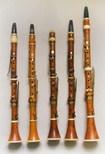
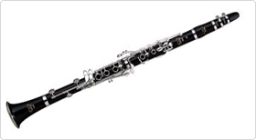

CLARINET
Clarinet, French clarinette, German Klarinette, single-reed woodwind instrument used orchestrally and in military and brass bands and possessing a distinguished solo repertory. The clarinet could easily be mistaken for an oboe, except for the mouthpiece, which uses a single reed. The mouthpiece, usually of ebonite (a hard rubber), has a slotlike opening in one side over which a single reed, made from natural cane, is secured by a screw clip, or ligature, or (in earlier times and still often in Germany) by string lapping. The player grips the mouthpiece, reed down, between his lips or lower lip and upper teeth.
The invention of the clarinet in the early 18th century is ascribed to Johann Christoph Denner, a renowned woodwind maker in Nürnberg. Previously, single reeds were used only in organs and folk instruments. The clarinet’s immediate predecessor was the small mock trumpet, or chalumeau, an adaptation of a folk reed pipe that Denner is credited with improving. His clarinette was longer and intended for playing mainly in the upper register, with the fundamentals (to which the chalumeau was confined) as an adjunct. It thus provided a complete trumpet (clarino) compass with steadier, clearer notes.
The modern clarinet developed between 1800 and 1850. Further keys were added to improve certain notes. Bores and mouthpieces were enlarged following general trends toward greater tonal power. Technological advances, including keywork mounted on pillars, the ring keys introduced by the flute-maker Theobald Boehm, and Auguste Buffet’s needle springs, led in the 1840s to the appearance in their main essentials of the two principal modern systems.
THIS IS HOW A CLARINET SOUNDS LIKE: